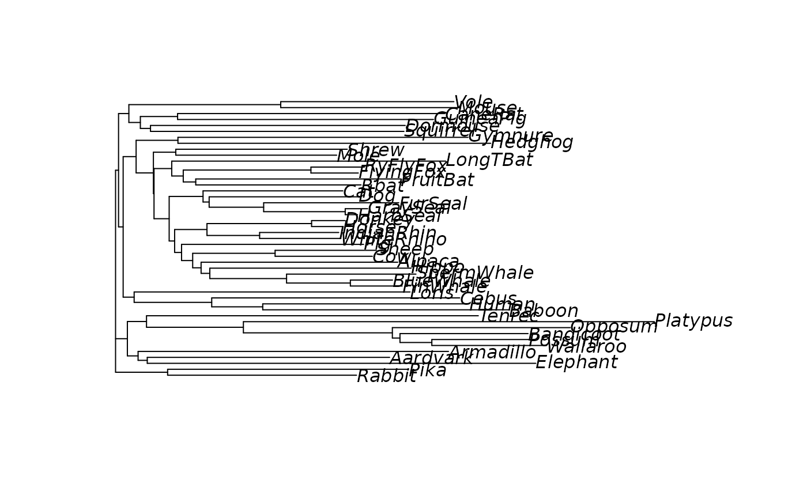

pml computes the likelihood of a phylogenetic tree given a sequence
alignment and a model. optim.pml optimizes the different model
parameters. For a more user-friendly interface see pml_bb.
Usage
as.pml(x, ...)
pml(tree, data, bf = NULL, Q = NULL, inv = 0, k = 1, shape = 1,
rate = 1, model = NULL, site.rate = "gamma", ASC = FALSE, ...)
optim.pml(object, optNni = FALSE, optBf = FALSE, optQ = FALSE,
optInv = FALSE, optGamma = FALSE, optEdge = TRUE, optRate = FALSE,
optRooted = FALSE, control = pml.control(), model = NULL,
rearrangement = ifelse(optNni, "NNI", "none"), subs = NULL,
ratchet.par = ratchet.control(), ...)
# S3 method for class 'pml'
logLik(object, ...)
# S3 method for class 'pml'
anova(object, ...)
# S3 method for class 'pml'
vcov(object, ...)
# S3 method for class 'pml'
print(x, ...)Arguments
- x
So far only an object of class
modelTest.- ...
Further arguments passed to or from other methods.
- tree
A phylogenetic
tree, object of classphylo.- data
An alignment, object of class
phyDat.- bf
Base frequencies (see details).
- Q
A vector containing the lower triangular part of the rate matrix.
- inv
Proportion of invariable sites.
- k
Number of intervals of the discrete gamma distribution.
- shape
Shape parameter of the gamma distribution.
- rate
Rate.
- model
allows to choose an amino acid models or nucleotide model, see details.
- site.rate
Indicates what type of gamma distribution to use. Options are "gamma" approach of Yang 1994 (default), ""gamma_quadrature"" after the Laguerre quadrature approach of Felsenstein 2001 or "freerate".
- ASC
ascertainment bias correction (ASC), allows to estimate models like Lewis' Mkv.
- object
An object of class
pml.- optNni
Logical value indicating whether topology gets optimized (NNI).
- optBf
Logical value indicating whether base frequencies gets optimized.
- optQ
Logical value indicating whether rate matrix gets optimized.
- optInv
Logical value indicating whether proportion of variable size gets optimized.
- optGamma
Logical value indicating whether gamma rate parameter gets optimized.
- optEdge
Logical value indicating the edge lengths gets optimized.
- optRate
Logical value indicating the overall rate gets optimized.
- optRooted
Logical value indicating if the edge lengths of a rooted tree get optimized.
- control
A list of parameters for controlling the fitting process.
- rearrangement
type of tree tree rearrangements to perform, one of "none", "NNI", "stochastic" or "ratchet"
- subs
A (integer) vector same length as Q to specify the optimization of Q
- ratchet.par
search parameter for stochastic search
Value
pml or optim.pml return a list of class pml,
some are useful for further computations like
- tree
the phylogenetic tree.
- data
the alignment.
- logLik
Log-likelihood of the tree.
- siteLik
Site log-likelihoods.
- weight
Weight of the site patterns.
Details
Base frequencies in pml can be supplied in different ways.
For amino acid they are usually defined through specifying a model, so the
argument bf does not need to be specified. Otherwise if bf=NULL,
each state is given equal probability. It can be a numeric vector given the
frequencies. Last but not least bf can be string "equal", "empirical"
and for codon models additionally "F3x4".
The topology search uses a nearest neighbor interchange (NNI) and the
implementation is similar to phyML. The option model in pml is only used
for amino acid models. The option model defines the nucleotide model which
is getting optimized, all models which are included in modeltest can be
chosen. Setting this option (e.g. "K81" or "GTR") overrules options optBf
and optQ. Here is a overview how to estimate different phylogenetic models
with pml:
| model | optBf | optQ |
| Jukes-Cantor | FALSE | FALSE |
| F81 | TRUE | FALSE |
| symmetric | FALSE | TRUE |
| GTR | TRUE | TRUE |
Via model in optim.pml the following nucleotide models can be specified: JC, F81, K80, HKY, TrNe, TrN, TPM1, K81, TPM1u, TPM2, TPM2u, TPM3, TPM3u, TIM1e, TIM1, TIM2e, TIM2, TIM3e, TIM3, TVMe, TVM, SYM and GTR. These models are specified as in Posada (2008).
So far 17 amino acid models are supported ("WAG", "JTT", "LG", "Dayhoff", "cpREV", "mtmam", "mtArt", "MtZoa", "mtREV24", "VT","RtREV", "HIVw", "HIVb", "FLU", "Blosum62", "Dayhoff_DCMut" and "JTT_DCMut") and additionally rate matrices and amino acid frequencies can be supplied.
It is also possible to estimate codon models (e.g. YN98), for details see also the chapter in vignette("phangorn-specials").
If the option 'optRooted' is set to TRUE than the edge lengths of rooted tree are optimized. The tree has to be rooted and by now ultrametric! Optimising rooted trees is generally much slower.
If rearrangement is set to stochastic a stochastic search
algorithm similar to Nguyen et al. (2015). and for ratchet the
likelihood ratchet as in Vos (2003). This should helps often to find better
tree topologies, especially for larger trees.
References
Felsenstein, J. (1981) Evolutionary trees from DNA sequences: a maximum likelihood approach. Journal of Molecular Evolution, 17, 368–376.
Felsenstein, J. (2004). Inferring Phylogenies. Sinauer Associates, Sunderland.
Yang, Z. (2006). Computational Molecular evolution. Oxford University Press, Oxford.
Adachi, J., P. J. Waddell, W. Martin, and M. Hasegawa (2000) Plastid genome phylogeny and a model of amino acid substitution for proteins encoded by chloroplast DNA. Journal of Molecular Evolution, 50, 348–358
Rota-Stabelli, O., Z. Yang, and M. Telford. (2009) MtZoa: a general mitochondrial amino acid substitutions model for animal evolutionary studies. Mol. Phyl. Evol, 52(1), 268–72
Whelan, S. and Goldman, N. (2001) A general empirical model of protein evolution derived from multiple protein families using a maximum-likelihood approach. Molecular Biology and Evolution, 18, 691–699
Le, S.Q. and Gascuel, O. (2008) LG: An Improved, General Amino-Acid Replacement Matrix Molecular Biology and Evolution, 25(7), 1307–1320
Yang, Z., R. Nielsen, and M. Hasegawa (1998) Models of amino acid substitution and applications to Mitochondrial protein evolution. Molecular Biology and Evolution, 15, 1600–1611
Abascal, F., D. Posada, and R. Zardoya (2007) MtArt: A new Model of amino acid replacement for Arthropoda. Molecular Biology and Evolution, 24, 1–5
Kosiol, C, and Goldman, N (2005) Different versions of the Dayhoff rate matrix - Molecular Biology and Evolution, 22, 193–199
L.-T. Nguyen, H.A. Schmidt, A. von Haeseler, and B.Q. Minh (2015) IQ-TREE: A fast and effective stochastic algorithm for estimating maximum likelihood phylogenies. Molecular Biology and Evolution, 32, 268–274.
Vos, R. A. (2003) Accelerated Likelihood Surface Exploration: The Likelihood Ratchet. Systematic Biology, 52(3), 368–373
Yang, Z., and R. Nielsen (1998) Synonymous and nonsynonymous rate variation in nuclear genes of mammals. Journal of Molecular Evolution, 46, 409-418.
Lewis, P.O. (2001) A likelihood approach to estimating phylogeny from discrete morphological character data. Systematic Biology 50, 913–925.
Author
Klaus Schliep klaus.schliep@gmail.com
Examples
example(NJ)
#>
#> NJ> data(Laurasiatherian)
#>
#> NJ> dm <- dist.ml(Laurasiatherian)
#>
#> NJ> tree <- NJ(dm)
#>
#> NJ> plot(tree)

# Jukes-Cantor (starting tree from NJ)
fitJC <- pml(tree, Laurasiatherian)
# optimize edge length parameter
fitJC <- optim.pml(fitJC)
#> optimize edge weights: -54808.83 --> -54230.41
#> optimize edge weights: -54230.41 --> -54230.41
#> optimize edge weights: -54230.41 --> -54230.41
fitJC
#> model: JC
#> loglikelihood: -54230.41
#> unconstrained loglikelihood: -17300.92
#>
#> Rate matrix:
#> a c g t
#> a 0 1 1 1
#> c 1 0 1 1
#> g 1 1 0 1
#> t 1 1 1 0
#>
#> Base frequencies:
#> a c g t
#> 0.25 0.25 0.25 0.25
if (FALSE) { # \dontrun{
# search for a better tree using NNI rearrangements
fitJC <- optim.pml(fitJC, optNni=TRUE)
fitJC
plot(fitJC$tree)
# JC + Gamma + I - model
fitJC_GI <- update(fitJC, k=4, inv=.2)
# optimize shape parameter + proportion of invariant sites
fitJC_GI <- optim.pml(fitJC_GI, optGamma=TRUE, optInv=TRUE)
# GTR + Gamma + I - model
fitGTR <- optim.pml(fitJC_GI, rearrangement = "stochastic",
optGamma=TRUE, optInv=TRUE, model="GTR")
} # }
# 2-state data (RY-coded)
dat <- acgt2ry(Laurasiatherian)
fit2ST <- pml(tree, dat)
fit2ST <- optim.pml(fit2ST,optNni=TRUE)
#> optimize edge weights: -19749.4 --> -17092.17
#> optimize edge weights: -17092.17 --> -17092.17
#> optimize topology: -17092.17 --> -17024.81 NNI moves: 10
#> optimize edge weights: -17024.81 --> -17024.81
#> optimize topology: -17024.81 --> -17024.81 NNI moves: 0
fit2ST
#> model: Mk
#> loglikelihood: -17024.81
#> unconstrained loglikelihood: -8702.769
#>
#> Rate matrix:
#> r y
#> r 0 1
#> y 1 0
#>
#> Base frequencies:
#> r y
#> 0.5 0.5
# show some of the methods available for class pml
methods(class="pml")
#> [1] AICc BIC anova glance logLik plot print simSeq update vcov
#> see '?methods' for accessing help and source code